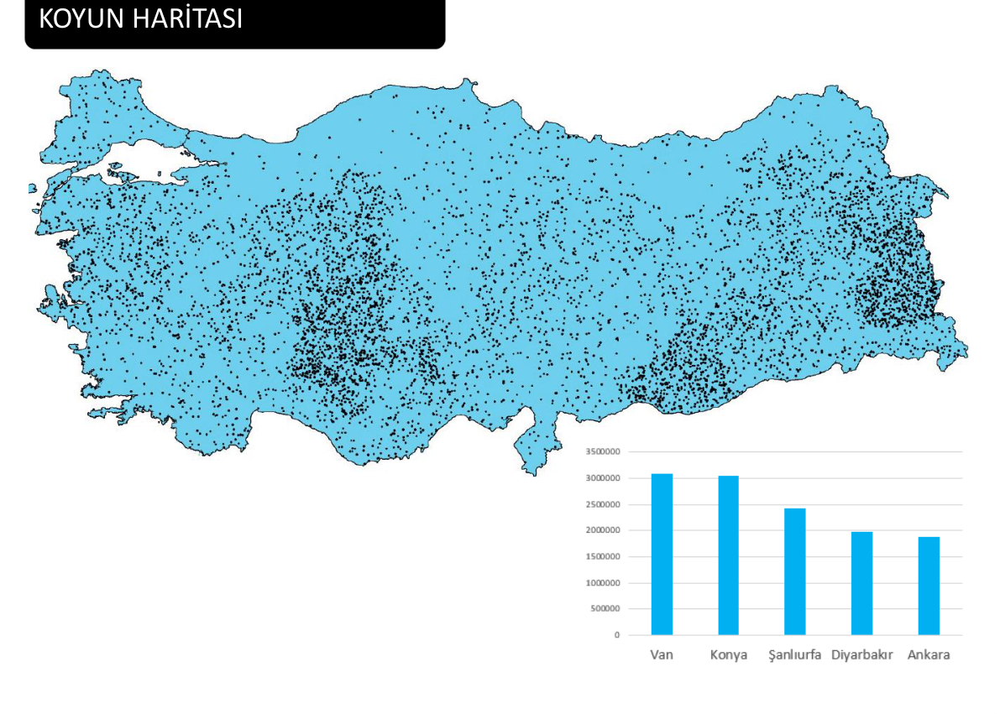
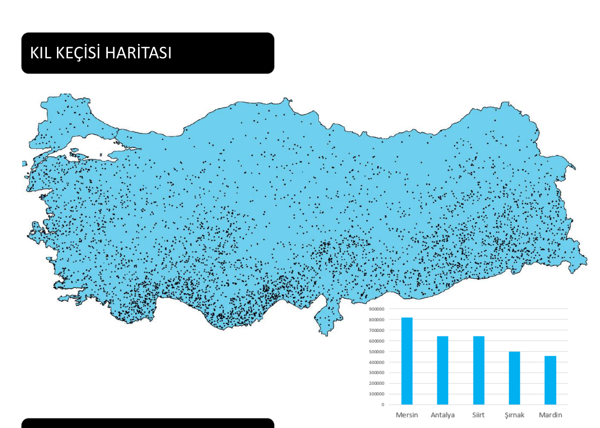
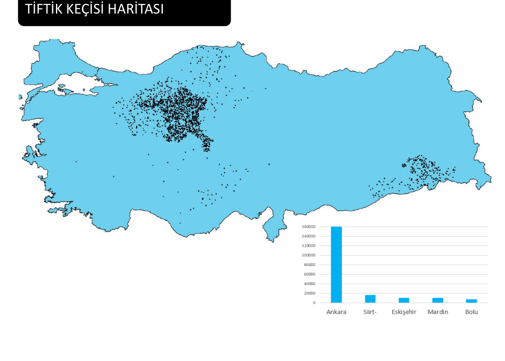
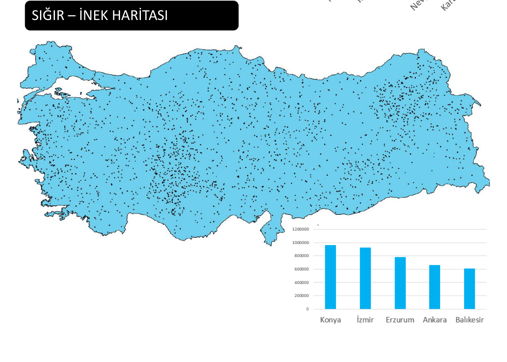
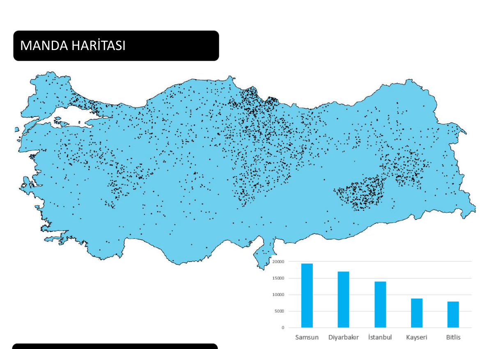
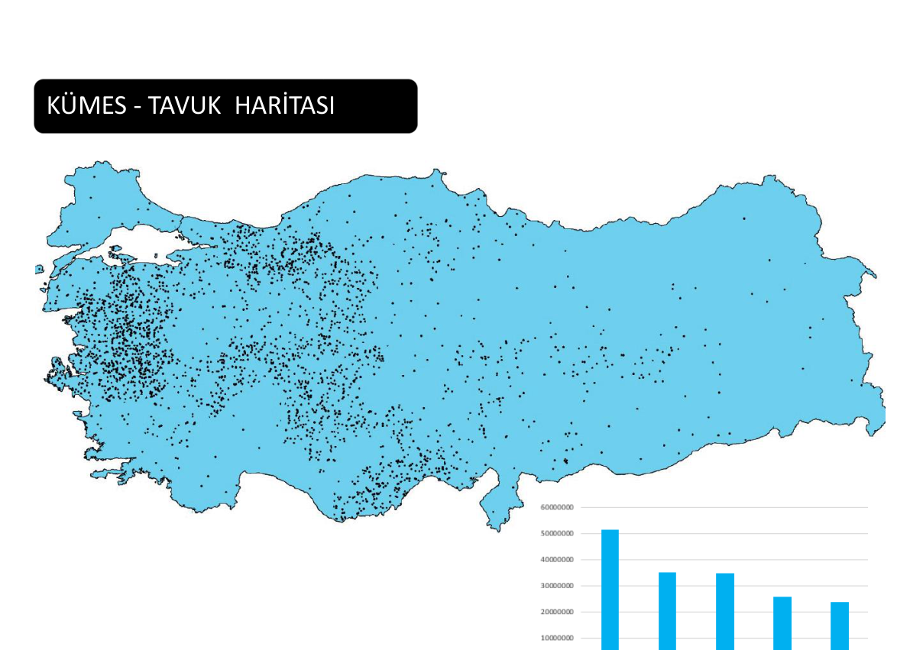
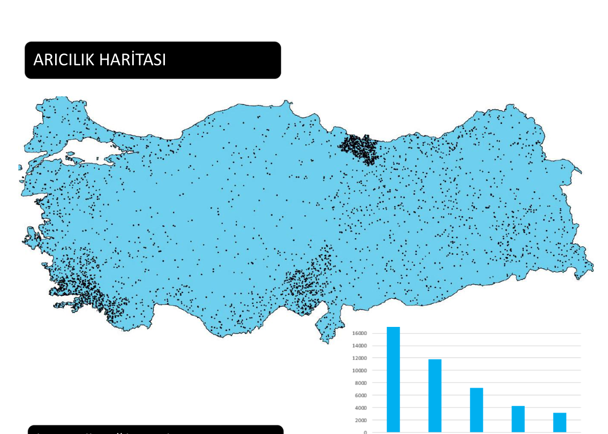
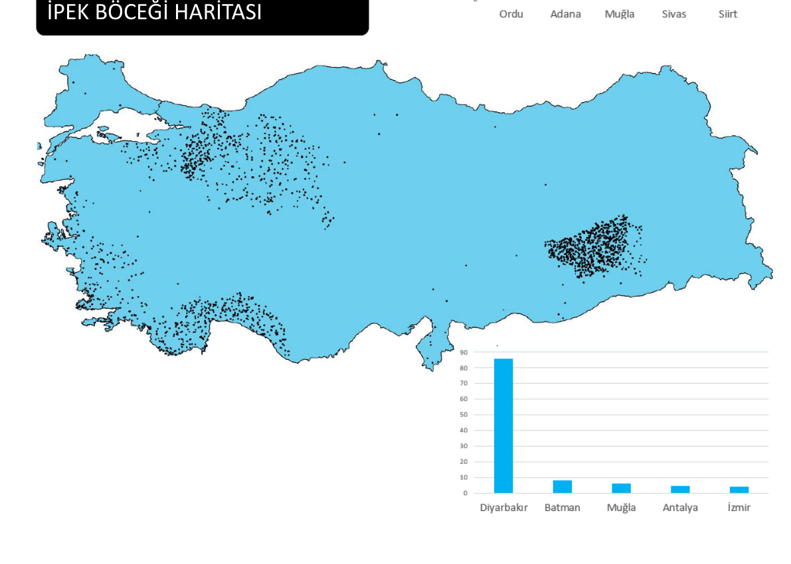

Coğrafya Ana Menüye Dön
TÜİK: Hayvancılık İstatistikleri
TÜİK Güncel Hayvancılık, Kümes, Arıcılık ve Su Ürünleri İstatistikleri.
TÜİK 2025 Güncellemesi
Küçükbaş Hayvancılık ve Dağılımı
🐑
Koyun
- İç kesimlerdeki bozkır alanlar elverişlidir.
- Karasal iklimden dolayı çok geniş bir alanda yetiştirilir.
- Genellikle mera hayvancılığı şeklinde yapılır.

TÜİK 2025 Lider İller:
1. Sırada
Van
2. Sırada
Konya
3. Sırada
Şanlıurfa
🐐
Kıl (Kara) Keçisi
- Maki ve çalılarla beslenir.
- Eğimli arazileri sever. (Toros Dağları)
- Ormanlara zarar verdiği gerekçesiyle "Keçi Islah Projesi" adı altında sınırlamalar getirildi!

TÜİK 2025 Lider İller:
İnatçı & Boğa Burcu
1. Sırada
Mersin
2. Sırada
Antalya
3. Sırada
Siirt
🐏
Tiftik Keçisi
- Eti, sütü ve kılı (tiftik) son derece değerlidir.
- Literatürde Ankara Keçisi olarak bilinir.

TÜİK 2025 Lider İller:
1. Sırada
Ankara
2. Sırada
Siirt
3. Sırada
Eskişehir
Büyükbaş Hayvancılık ve Dağılımı
🐄
Sığır
- Çayır alanlarında mera hayvancılığı şeklinde (özellikle Doğu Anadolu'da) yetiştirilir.
- Büyük şehirlerin çevresinde ise pazar yakınlığından dolayı besi (ahır) hayvancılığı şeklinde gelişmiştir.
- Eti, sütü, derisi ve peyniri son derece değerlidir.

TÜİK 2025 Lider İller:
1. Sırada
Konya
2. Sırada
İzmir
3. Sırada
Erzurum
🐃
Manda (Camış)
- Türkiye'deki toplam sayıları 180 bin civarındadır.
- Bataklık ve sulak alanları çok sever; suya girerek serinleme ihtiyacı duyar.
- Uzakdoğu Asya kökenli bir hayvandır; kaymağı ve sütü çok değerlidir.

TÜİK 2025 Lider İl:
Açık Ara 1. Sırada
👑 SAMSUN
Kümes (Tavuk) Hayvancılığı
🐓
Kümes Hayvancılığı Özellikleri
- Büyük kentlerin çevresinde yüksek gelişim gösterir. Bunun temel nedeni iklim koşulları değil, tüketici nüfusa (pazara) yakınlıktır.
- Kapalı ve modern entegre tesislerde yapıldığından iklim koşullarından etkilenmez; üretimde yıldan yıla dalgalanma görülmez.
- Hazır yem ile tesislerde besleme esastır.

TÜİK 2025 En Önde Gelen İller:
1. Sıra
Manisa
2. Sıra
Bolu
3. Sıra
Sakarya
4. Sıra
Mersin
Sınav Hafızası & Kritik Bilgi
Neden Beyaz Et Tüketimi Çok Fazladır?
Beyaz et (tavuk) tüketiminin kırmızı ete göre çok daha yaygın ve yoğun olmasının iki temel nedeni vardır:
🩺
Sağlık Açısından: Hafif, kolesterol oranının düşük ve sindiriminin kolay olması.
💰
Fiyat Avantajı: Kırmızı ete göre son derece uygun fiyatlı olması.
Arıcılık ve İpek Böcekçiliği
🐝
Arıcılık
- Doğrudan bitki örtüsü (flora) çeşitliliğine bağlı olarak gelişir.
- Tarımın zor olduğu engebeli, engebeli ve dağlık alanlarda yaygın bir geçim kaynağıdır.
- Bölgeler arasındaki çiçek açma dönemlerinin farklılığı, Türkiye'de "Gezgin Arıcılık" faaliyetlerini doğurmuştur!

TÜİK 2025 Lider İller:
1. Sırada
Ordu
2. Sırada
Adana
3. Sırada
Muğla
🐛
İpek Böcekçiliği
- Yaş koza üretimi için dut ağacının varlığı şarttır; dut yaprağı ile beslenir.
- Suni (yapay) ipek üretiminin artması nedeniyle son yıllarda geleneksel üretimde gerileme olmuştur.
- Üretim faaliyetleri devlet tarafından Kozabirlik aracılığıyla desteklenmektedir.

TÜİK 2025 Lider İller:
1. Sırada
Diyarbakır
2. Sırada
Batman
3. Sırada
Muğla
Balıkçılık ve Kültür Yetiştiriciliği (2025 Verileri)
🛥️
Deniz Balıkçılığı ve Cumhuriyet Rekoru
📈 Tarihi Rekor: 2025 yılı, Türkiye su ürünleri tarihinde üretim miktarının 1 milyon 20 bin ton seviyesine ulaşmasıyla Cumhuriyet tarihinin en yüksek rekor yılı olarak kayıtlara geçmiştir!
Deniz balıkları avcılığında, özellikle uygulanan sıkı kota sistemleri ve elverişli iklim koşullarının etkisiyle son derece verimli bir sezon geçirilmiştir.
Üretim Miktarında Önde Gelen Balık Türleri:
1. Lider
🐟 Hamsi
2. Sıra
🐟 Palamut
3. Sıra
🐟 Sardalya
🐟
Kültür Balıkçılığı (Yetiştiricilik) Dağılımı
%70
Denizlerde Üretim
%30
İç Sularda Üretim
Yetiştirilen En Önemli Türler: İç sularda Alabalık, denizlerde ise Levrek ve Çipura'dır.
En Çok Balık Elde Edilen Yerler: Denizlerde açık ara Karadeniz, iç sularda ise Van Gölü (İnci Kefali ve yetiştiricilik) başı çekmektedir.